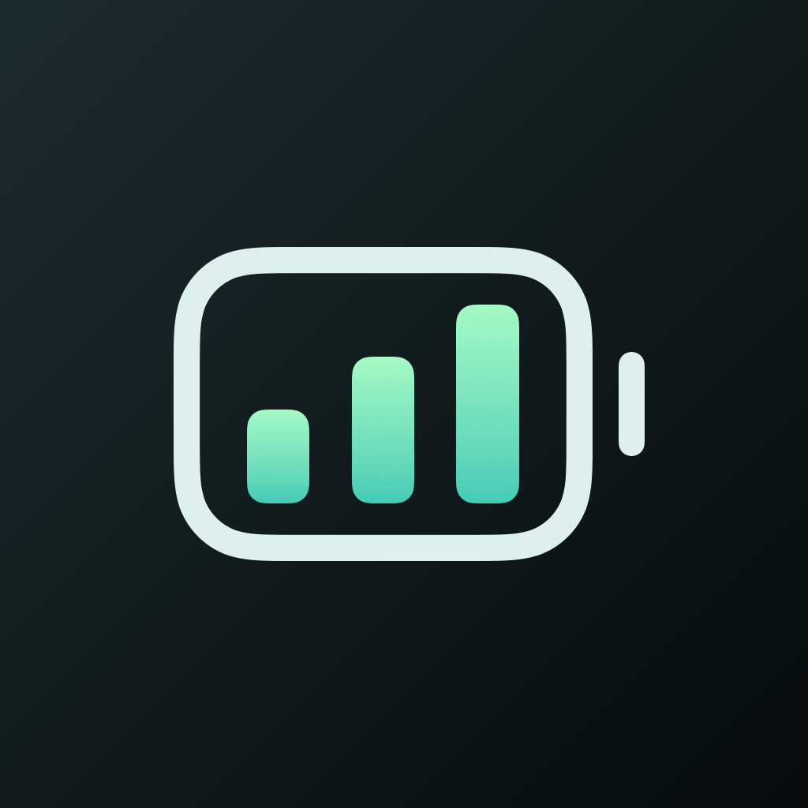
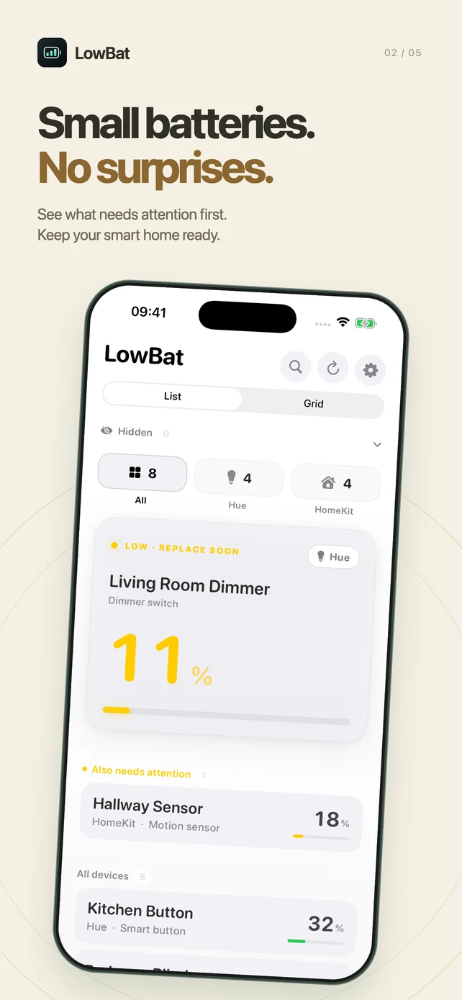
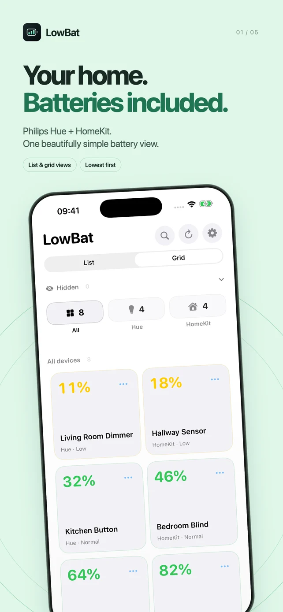
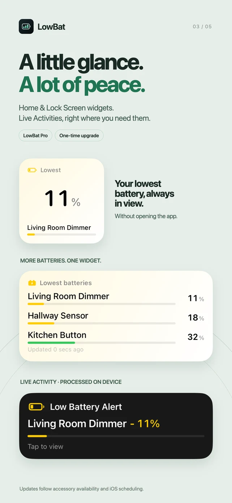
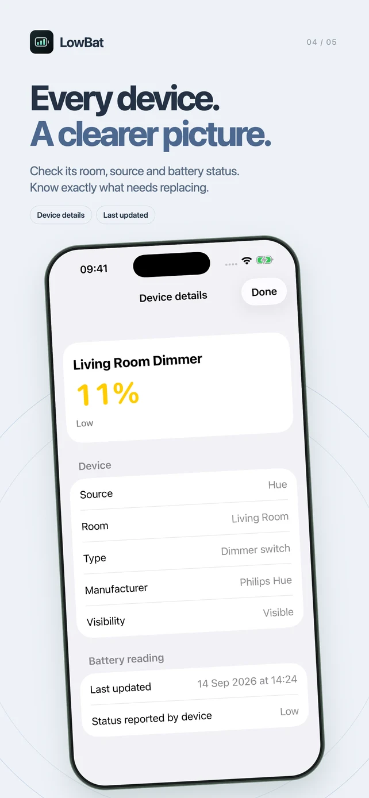
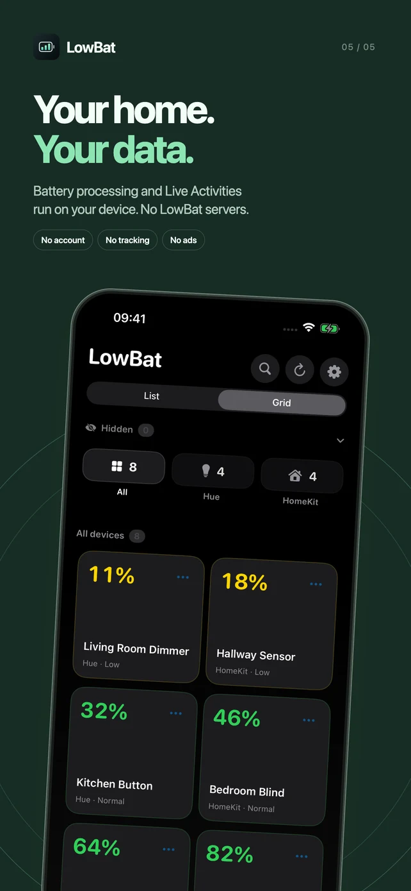

One home. One battery view.
Bring Philips Hue and HomeKit battery readings together. Switch between a compact list and a spacious grid, with the lowest batteries first.

LowBatFOR YOUR SMART HOME · iOS 18+
The dimmer. The door sensor. The blinds.
All their batteries, together in LowBat.
A clear view of your Philips Hue and HomeKit accessories, with the lowest batteries first. Less checking. Fewer surprises.
Free battery monitoring. Optional Pro upgrade.
One-time purchase. No subscription.


A SMALL APP. A USEFUL JOB.
Bring Philips Hue and HomeKit battery readings together. Switch between a compact list and a spacious grid, with the lowest batteries first.
Search your accessories or filter by Hue and HomeKit. Open a device to see its room, type, manufacturer, battery status and last update, when available.
Pro adds small, medium and large Home Screen widgets, plus Lock Screen widgets. See your lowest battery, top three or top six without opening LowBat.
With Pro, choose your low-battery threshold for local notifications and Live Activities on the Lock Screen and Dynamic Island. Hide devices you don’t want to monitor.
Battery readings depend on what each accessory reports. Background checks, widgets and Live Activity updates follow iOS scheduling and accessory availability; continuous real-time monitoring is not guaranteed.
MEET THE NEW LOWBAT



YOUR HOME. YOUR DATA.
LowBat runs battery processing on your device. Local notifications and Live Activities are created and updated on-device, too. We don’t operate a LowBat backend or a remote notification server.
Read the privacy policyA small setup detail: if local Hue discovery fails, LowBat may contact Philips Hue’s discovery service to find your bridge. Purchases use Apple’s App Store. Neither is a LowBat battery-processing server.
UP AND RUNNING
Use Hue, HomeKit, or both.
LowBat works alongside your existing smart home apps.
Get LowBat for iPhone. Requires iOS 18 or later.